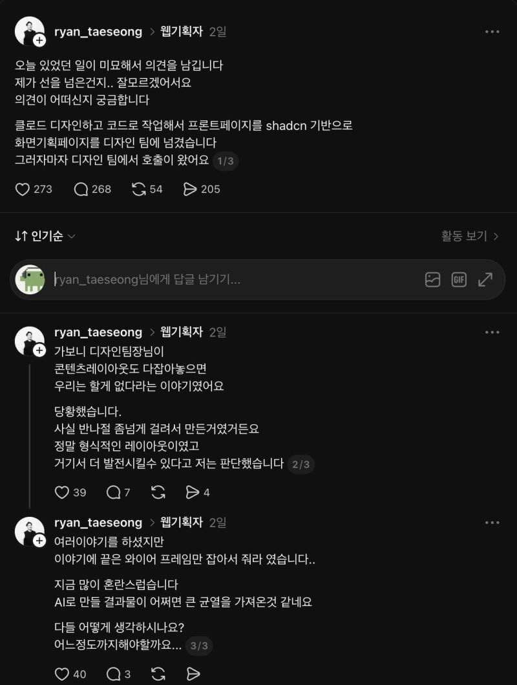
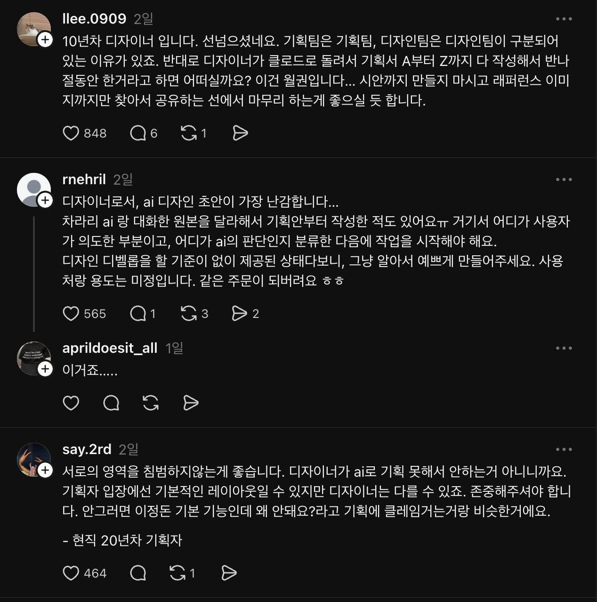
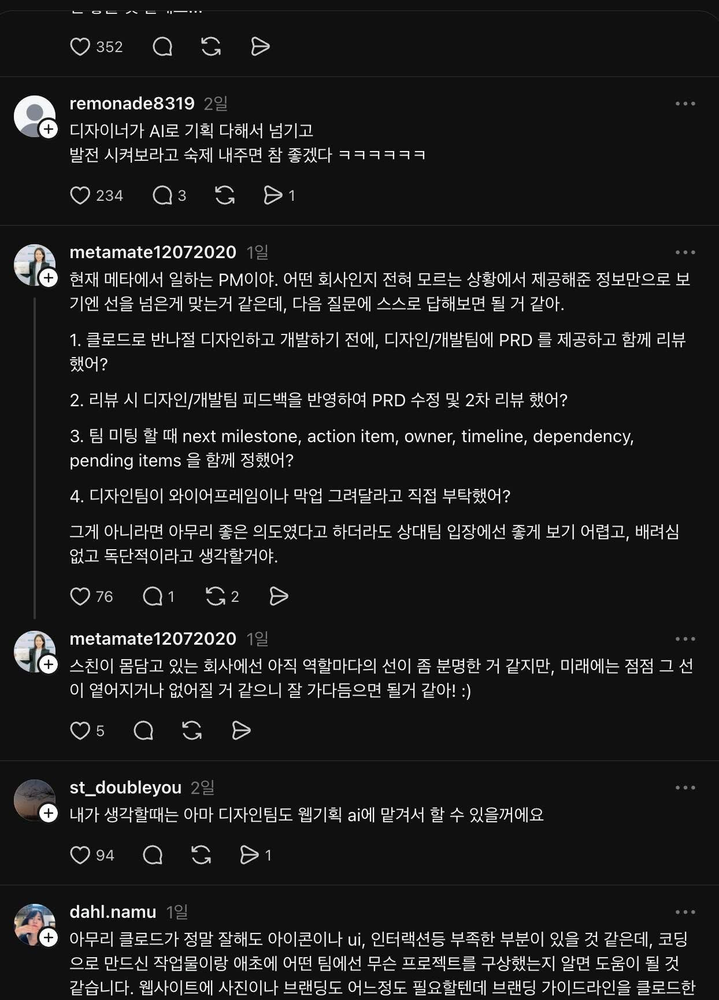

0.1
무슨 일이 있었나

웹기획자가 Claude로 반나절 남짓 만에 디자인·코드까지 만든 화면기획 페이지를 디자인팀에 넘겼습니다. 글쓴이는 기본적인 레이아웃이니 디자인팀이 더 발전시킬 수 있는 초안이라고 생각했습니다.
하지만 디자인팀장은 콘텐츠 레이아웃까지 정해지면 자신들이 할 일이 없어진다며 와이어프레임만 전달해 달라고 했습니다. 글쓴이는 좋은 의도로 만든 AI 결과물이 팀 사이의 균열을 만든 것 같아, 어디까지 해야 하는지 질문했습니다.
0.2
같은 장면, 다른 입장
댓글의 핵심 쟁점 · 비슷한 의견은 함께 묶었습니다


| 관점 | 핵심 생각 |
|---|---|
| 역할과 결정권 | 상대 직군의 전문성과 판단 여지를 존중해야 한다. 반대로 디자이너가 AI로 기획서를 완성해 “발전시켜 달라”고 넘긴다면, 기획자는 어떻게 느낄까? |
| 초안의 해석 부담 | 받는 사람은 어디까지가 작성자의 의도이고 어디부터가 AI의 판단인지 구분해야 한다. 기준 없는 초안은 오히려 해석·수정할 일을 더 얹을 수 있다. |
| 협업 과정 | 좋은 의도라도 사전 합의가 빠지면 독단적으로 느껴질 수 있다. PM은 기획의 사전 공유, 피드백을 반영한 재검토, 다음 단계의 담당·일정·의존 관계 합의, 상대 팀의 직접 요청 여부를 물었다. |
| 프로젝트 맥락 | 어떤 팀의 무슨 프로젝트인지, 브랜드 가이드와 제약 조건이 무엇인지 알아야 초안을 판단할 수 있다. AI가 만든 아이콘·UI·인터랙션에도 부족한 부분이 있을 수 있다. |
| 역할의 변화 | 디자인팀도 AI로 기획할 수 있다. 지금은 역할이 나뉘어 있지만, 앞으로는 직군 사이의 선이 옅어지거나 없어질 것이라는 전망도 있다. |
0.3
오늘 나눌 질문
가볍게 이야기할 질문 1~2개를 골라봅시다
- 우리 회사에서 이 일이 일어났다면, 나는 어느 쪽에 가까울까?가장 공감하는 입장과 그 이유를 한 문장으로 이야기해 봅시다.
- ‘초안’과 ‘월권’의 경계는 무엇이 정할까?결과물의 완성도, 사전 합의, 받는 사람의 재량 중 내 판단을 바꾸는 조건은 무엇인가요?
- AI로 만든 결과물을 다른 팀에 넘길 때, 무엇을 함께 전달할까?내 의도와 AI의 판단, 바꿔도 되는 범위를 어떻게 알릴지 이야기해 봅시다.
- 직군의 경계가 옅어진다면, 내 역할의 가치는 어디에 있을까?AI가 대신 만들 수 있어도 내게 남는 판단과 책임을 생각해 봅시다.